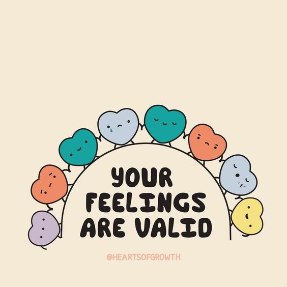
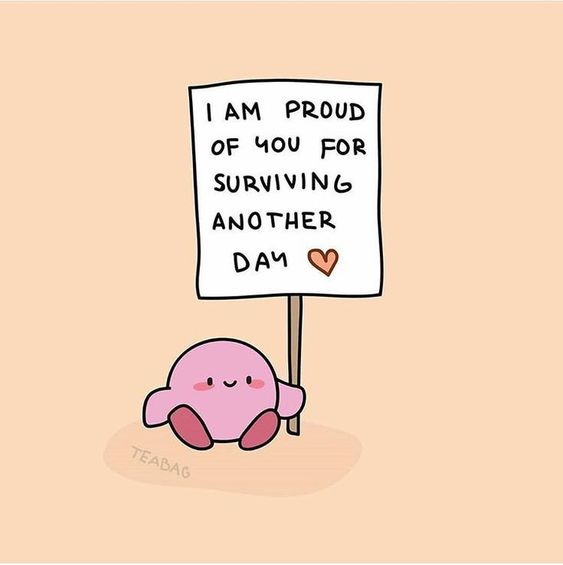
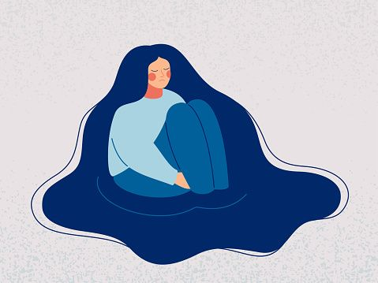
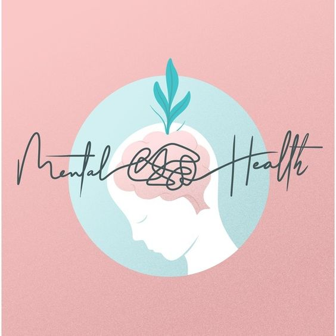
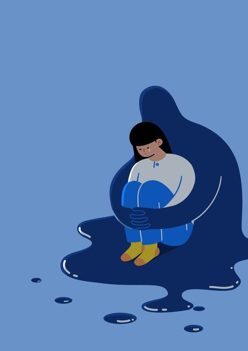
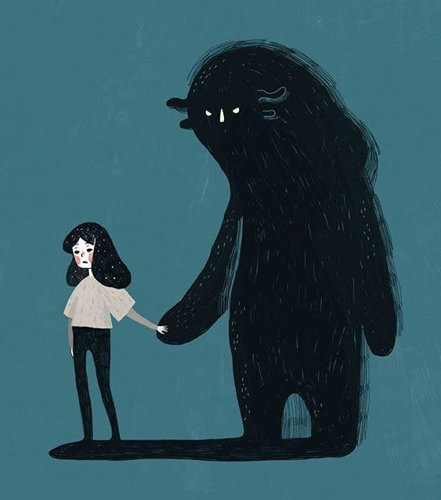
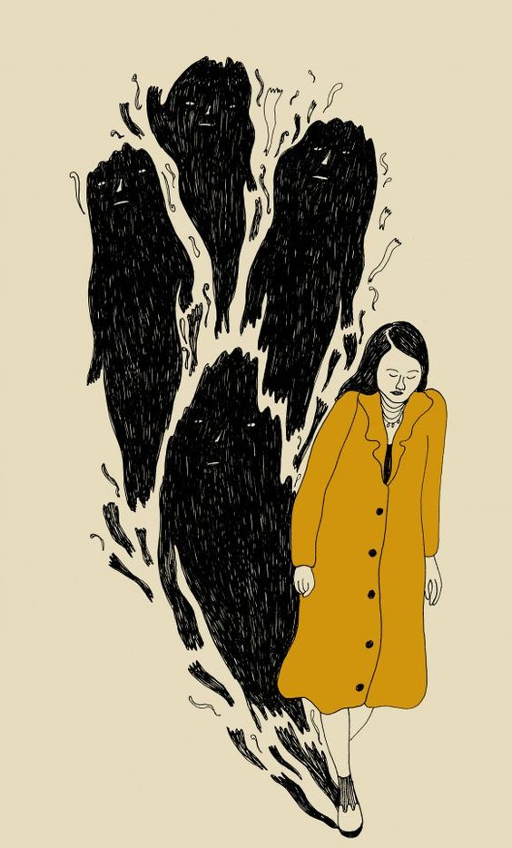

¿Que es una Emocion?
Una emoción es un sentimiento que surge cuando la persona reacciona de manera subjetiva
al ambiente, generando así un estado afectivo que va acompañado de cambios físicos puesto que
las emociones pueden causar reacciones fisiológicas.

6 Pequeños Hábitos Para Mejorar tu Bienestar Mental
1 Aliviana el peso de las Situaciones Difíciles
2 Practica la Gratitud
3 Conéctate con la Naturaleza
4 Meditao
5 Escribe tus Pensamientos y Sentimientos
6 Cuida tu Cuerpo

5 razones por las que no debes temerle a la terapia
1. Asegurate de querer ir a terapia por ti mismo y no por nadie más.
2. Encuentra al terapeuta adecuado que te funcione
3. Busca la recomendacion de alguien de confianza si no sabes por donde empezar.
4. La terapia puede ser asequible.
5. No descartes la terapia de forma permanente, ya que tu vida siempre esta cambiando.

8 Hábitos que NO Sabes que Son Por ANSIEDAD
1. Retorcerse el cabello
2. Pellizcarse la piel
3. Soñar despierto
4. Estar inquieto y jugar con algo
5. Dormir demasiado o muy poco
6. Pasar demasiado tiempo en las redes sociales
7. Hablar demasiado o muy poco, o discutir
8. Ser olvidadizo y no poder concentrarte

10 Cosas que la Depresión nos hace Hacer
1. Aislarte
2. Ser desorganizado
3. Mala Higiene
4. Problemas para dormir
5. Dramatizar cada situacion
6. Terribles habitos alimenticios
7. Falta de Motivación
8. Evadir tus problemas
9. Sentirse culpade y odio por uno mismo
10. Vivir con miedo
6 Consecuencias del Trauma no Superado
1. Te culpas a ti mismo
2. Reprimes tus sentimientos
3. Hay una interrupción en tu rutina diaria
4. Saboteas tus relaciones
5. Siempre asumes lo peor
6. Sentirse ansioso sin motivo

8 Señales de Ansiedad Social
1. Siempre te sientes cohibido
2. Tu ansiedad se siente fuera de control
3. Afecta a tu Rendimiento
4. Afecta a tus Relaciones
5. No desaparece entre gente de confianza
6. Sobreanalizas Todo
7. Evita situaciones sociales
8. Tienes sintomas fisicos

7 Señales de que Podrías Ser Emocionalmente Abusivo
1. Insultas a la gente de broma
2. Invalidas los sentimientos de los demas
3. Te gusta avergonzar a los demas
4. Te gusta provocar
5. Le dices a la gente que su version de la realidad es incorrecta
6. Usas tus emociones para que la gente haga lo que tu quieres
7. Usas el silencio como arma
Es uno de los blogs de psicología que ofrece una mayor variedad en la temática de sus contenidos
y también uno de los más visitados en español. En menos de un año desde que tres estudiantes de
psicología de Barcelona (España) lo crearon, ya es líder en la divulgación de artículos sobre psicología
con más de 20 millones de visitantes mensuales y su página de Facebook cuenta ya con más de 1.200.000 seguidores.
El centro de psicoterapia especializado en mujeres Serena Psicología cuenta con un interesante
blog que trata temas de interés general.
A través de sus artículos, que normalmente están planteados centrándose en consejos prácticos
y en la resolución de dudas frecuentes en la vida cotidiana, podrás aprender sobre aspectos de
la mente humana como la gestión de la ira, el sentimiento de culpa en la maternidad, las creencias
machistas y cómo detectarlas, la autoestima en mujeres, las emociones asociadas a las rupturas de pareja, y más.
Es frecuente que en los blogs de psicología se hable sobre investigaciones y conceptos teóricos
que hacen referencia al funcionamiento del cerebro humano, como si esta fuera una máquina que trabaja
de manera privada y de manera individual. Sin embargo, es menos frecuente encontrar webs que se centren
especialmente en la esfera práctica de la gestión de las habilidades sociales.
La ansiedad y el miedo son experiencias normales que todos experimentamos cada cierto tiempo.
El miedo surge ante una amenaza externa identificable (por ejemplo, ante un atraco) y es una de
las seis emociones básicas. El miedo se considera fundamental para la supervivencia porque nos
prepara para la reacción de lucha-huida ante situaciones de riesgo inminente. Por otra parte,
la ansiedad es un estado emocional no placentero que se acompaña de nerviosismo y una sensación de desasosiego.
SOM Salud Mental 360 es una iniciativa impulsada por centros de la Orden Hospitalaria San Juan de Dios.
Participan en este proyecto diferentes centros que atienden a personas con problemas de salud mental:
el Parc Sanitari Sant Joan de Déu (Sant Boi del Llobregat, Barcelona), el Hospital Sant Joan de Déu Barcelona
(Esplugues de Llobregat, Barcelona) y Sant Joan de Déu Terres de Lleida (Almacelles-Lleida), así como Sant Joan de Déu Serveis
Socials-Barcelona además del ámbito solidario representado por Solidaridad San Juan de Dios.
{% endblock %}